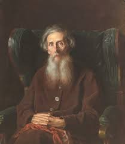
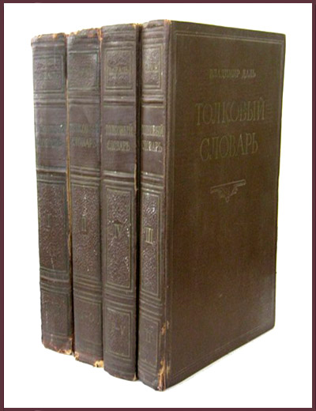

Врач, моряк, чиновник и человек, который всю жизнь записывал, как говорят вокруг. Его главный труд, «Толковый словарь живого великорусского языка», до сих пор нужен всем, кто пишет и читает по-русски. В этом году исполняется 225 лет со дня его рождения.

Владимир Даль родился в 1801 году в Луганске. Отец его был врачом и выходцем из Дании. Сам Даль рос в русской среде и считал себя русским человеком, хотя по происхождению был не совсем таким.
В 1814 году он поступил в Морской кадетский корпус в Петербурге. Дальше была служба на флоте, потом военная медицина. Профессия врача потом очень пригодилась: лечить приходилось разных людей, и разговаривать с ними тоже.
Даль много ездил по стране. Он был знаком с Пушкиным, долгие годы служил чиновником в Оренбургском крае, позже работал в Нижегородской губернии. Такая служба многим казалась скучной, но она дала ему то, чего не дал ни один кабинет: тысячи разговоров с крестьянами, казаками, мастеровыми и торговцами.
Родился в Луганске.
Поступил в Морской кадетский корпус в Петербурге.
Служит в Оренбургском крае и записывает речь казаков и крестьян.
Избран членом-корреспондентом Академии наук.
Выходят «Пословицы русского народа».
Первое издание «Толкового словаря живого великорусского языка» в четырёх томах.
Умирает в Москве.
Выходит второе издание словаря под редакцией Бодуэна де Куртенэ.
Слово «живого» в названии здесь главное. Даль хотел описать язык, на котором люди говорят на базаре, в избе, на службе и в дороге, а не только тот, что записан в книгах. В словаре около 200 тысяч слов.
Работал он долго и в основном сам. Сначала были записи: он слушал, записывал, сравнивал. Где-то замечал, что одно и то же слово в разных губерниях звучит по-разному, а где-то ловил слово, которого в книгах не было вовсе. Из таких записей и вырос словарь.

Слова в нём собраны не просто по алфавиту, а гнёздами. Однокоренные слова стоят вместе, и от одного корня видна целая семья производных. Так сразу понятно, как язык сам строит новые слова.
Внутри статьи Даль сначала толкует слово, часто через синонимы, а потом приводит примеры употребления, пословицы, загадки и поговорки. Бывает, что статья занимает целую страницу и становится похожа на короткий рассказ о том, как слово жило в речи.
Он не отбирал только «правильные» слова. Диалектные, просторечные и местные слова попадали в словарь наравне с литературными. Многие из них без этой работы давно бы исчезли.
Параллельно Даль собирал пословицы. В 1862 году вышел сборник «Пословицы русского народа», в котором, по разным подсчётам, около 30 тысяч пословиц.
Нажмите на пословицу, и под ней откроется её смысл.
Смысл: спрашивая дорогу, можно добраться куда угодно.
Смысл: сначала подумай, потом делай.
Смысл: важно не то, как всё выглядит снаружи, а то, что внутри.
Смысл: итоги подводят тогда, когда дело уже сделано.
Словарь Даля до сих пор открыт на столах у филологов, редакторов, писателей и переводчиков. Без него трудно понять многие слова в русской классике: часть из них сегодня ушла из обихода, а Даль их записал.
Для меня главное в Дале то, что язык для него был не набором правил, а памятью людей. Когда исчезает слово, исчезает и способ смотреть на мир, который оно хранило. В разговоре о цифровом суверенитете это важно: защищать страну значит защищать и её язык, и то, как люди понимают друг друга.